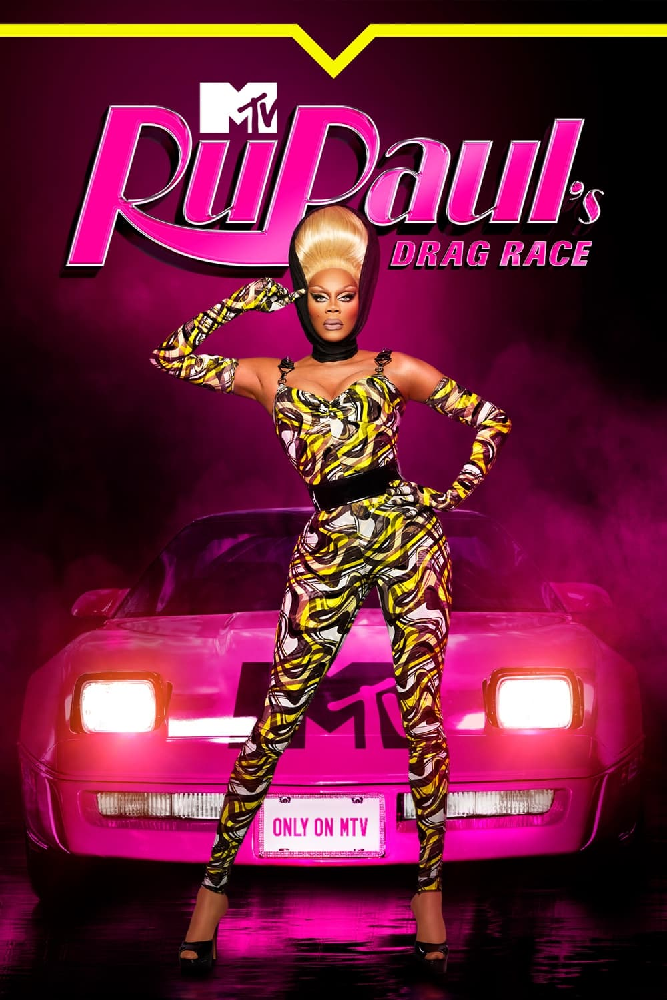
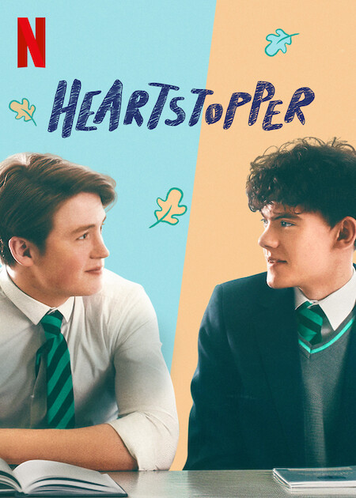

Succession
 Acompanhe a história da família Roy, composta por Logan e seus quatro filhos, que controla um dos maiores conglomerados de meios de comunicação e entretenimento do mundo.
Acompanhe a história da família Roy, composta por Logan e seus quatro filhos, que controla um dos maiores conglomerados de meios de comunicação e entretenimento do mundo.
Ted Lasso
 Ted Lasso é uma série de televisão de comédia estadunidense desenvolvida por Bill Lawrence, Jason Sudeikis, Joe Kelly e Brendan Hunt, baseada em um personagem de mesmo nome que Sudeikis interpretou pela primeira vez em uma série de comerciais para a cobertura da NBC Sports da Premier League.
Ted Lasso é uma série de televisão de comédia estadunidense desenvolvida por Bill Lawrence, Jason Sudeikis, Joe Kelly e Brendan Hunt, baseada em um personagem de mesmo nome que Sudeikis interpretou pela primeira vez em uma série de comerciais para a cobertura da NBC Sports da Premier League.
RuPaul's Drag Race
RuPaul, a drag queen mais famosa do mundo, apresenta o concurso mais colorido da televisão. As concorrentes precisam ser divas com muito glamour para ganhar o cobiçado título de Drag Queen Superstar.
Severance
 Mark lidera uma equipe de funcionários cujas memórias foram cirurgicamente divididas entre vida profissional e pessoal. Um misterioso colega aparece fora do ambiente trabalho, e ele começa uma jornada para descobrir a verdade sobre seu emprego.
Mark lidera uma equipe de funcionários cujas memórias foram cirurgicamente divididas entre vida profissional e pessoal. Um misterioso colega aparece fora do ambiente trabalho, e ele começa uma jornada para descobrir a verdade sobre seu emprego.
Heartstopper
Os adolescentes Charlie e Nick descobrem que são mais que apenas amigos e precisam lidar com as dificuldades da vida escolar e amorosa.